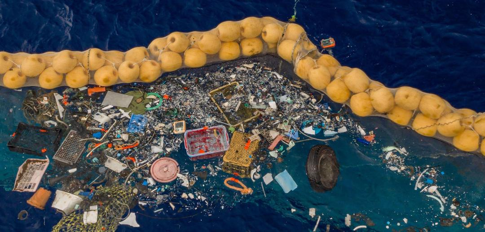
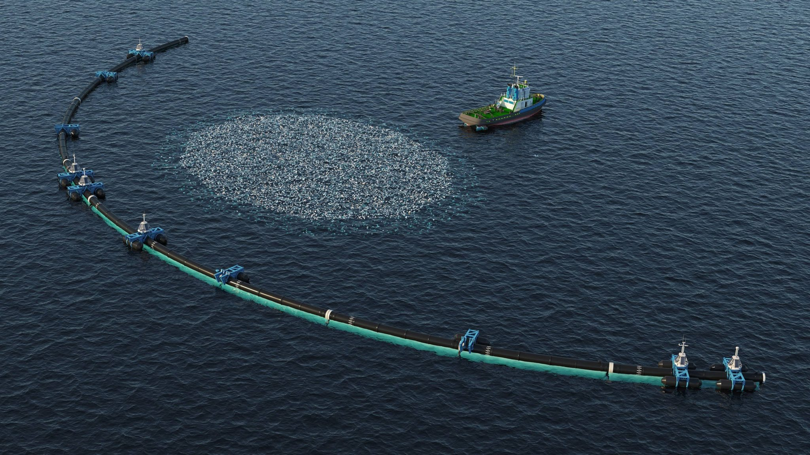
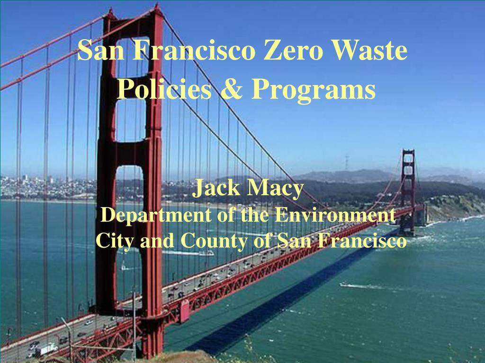

Success Stories
Around the world, many environmental initiatives have shown meaningful impact. The Ocean Cleanup Project
successfully removed plastic waste from rivers, proving how innovation can protect marine life.
San Francisco achieved one of the highest recycling rates globally through strict waste policies and
community efforts. School groups and youth volunteers have also contributed through tree-planting campaigns
and zero-waste drives. These examples show that collective action leads to real change.

|

|
The Ocean Cleanup: Tackling the Great Pacific Garbage Patch
The Challenge: Millions of tons of plastic waste are trapped in vast ocean gyres, threatening marine life and ecosystems, particularly in the Great Pacific Garbage Patch (GPGP).
The Action: The Ocean Cleanup, a non-profit engineering organization, developed large, passive collection systems that capture plastic using the ocean's natural currents. They also deploy Interceptors to clean rivers, the primary source of ocean plastic.
The Success: The system successfully removed large amounts of debris from the GPGP, including massive ghost nets. The organization continues to scale up its river and ocean technology, proving that innovation is key to solving global pollution problems.
|
|

|
San Francisco: A Leader in Urban Zero Waste
The Challenge: Cities worldwide struggle with ever-increasing municipal solid waste (trash) sent to landfills.
The Action: San Francisco implemented a mandatory composting and recycling program requiring all residents and businesses to separate their waste into three distinct bins (Recycling, Compost, and Landfill). They also banned plastic bags and foam food containers.
The Success: By focusing on waste diversion, San Francisco achieved an impressive 80% diversion rate, one of the highest in the world for a major city. This demonstrates how strong local policy and robust infrastructure can transform waste management and reduce environmental impact.
|
Share Your Story!
Do you know of an impressive environmental success story, whether in your school, community, or state? We want to hear about it!
Visit our Contact Page to submit details and inspire others.
Further Resources:
|